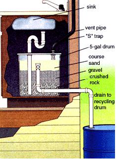
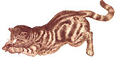

Dear Mother:
I love the magazine and enjoyed the article on yurt living ("A New Life on the Rio Grande") in the September 1999 issue. In the article, author Lisa Mower mentions "an easily constructed five-gallon bucket filter that goes beneath the kitchen sink. It is supposed to filter out particles, fats and gunk before the water goes to the garden... "How can I find out about this homemade filter? It's exactly what we need here, for our water recycling projects in Mexico!
Gina Bisaillon
Instituto de Permacultura
de Mexico
San Jose de Gracia, Mexico
Your question brings up "gray water" management - an environmentally sensible system where wash and cooking water is segregated from human waste and disposed of independently. In the process, human waste never mixes with the drinking water supply, but is left to decay naturally back to soil in an earth closet, privy or outhouse (located at least 100 feet from a water source), in a composting toilet or in a separate flow of "black water" that is treated in a competent belowground anaerobic septic system. Water used to wash diapers, sickroom linens or bandages should also be treated as black water. Only if boiled the old-time way with lye soap or modern antibacterial detergent for ten minutes can this contaminated wash water be disposed of nonseptically.
A five-gallon under-sink water filter can be adequate for a small sink that is used sparingly and cleaned often, but a 20-gallon or greater capacity is better.
Find a stout plastic or metal container with a tight-fitting but removable lid. You'll also need a few feet of plastic plumbing pipe of the same diameter as your sink's drain pipe, a 90° elbow, a cap and grommets to fit where pipe enters/exits the container and cement and fittings as needed.
Install a conventional "S" trap below the sink and run the drain straight down through a snug-fitting (preferably grommeted) hole in the lid and almost to the bottom of the container. Run the outflow pipe horizontally through a watertight (well-grommeted or cemented) hole in the side of the container, an inch up from the bottom. Put a 90° elbow on the inner end of the outflow so it faces up vertically. Into the top of the elbow, insert a length of pipe long enough to reach within two inches of the top of the container. Cap the upper end and drill a series of small (3/8"-diameter) holes in the upper two or three inches of this pipe.
Pouring around the pipes, fill the bottom third of the container with coarse crushed rock, the middle third with stream-run gravel, then cover the cap on the outflow tube with coarse sand. If the sand is finer than the holes drilled in the top of the outflow tube, cover the holes with a single-layer wrap of coffee filter paper held on with a rubber band or wire.
Water runs down to the bottom of the container, rising in time through filtering agents to flow through the holes drilled in the outflow. Lead the water to your recycling tanks. Since it contains some fertilizer, it will be good for watering the garden. If you use biodegradable, low-phosphate cleansers, it should not contaminate the groundwater or runoff.
Cooking scraps, soap scum and other organic matter trapped in the filter will decay and generate sewer gas containing methane (but not enough to trap and burn for heat or light). To vent this noxious gas out of the house, run a length of pipe an inch or two into the container through a grommeted hole in the lid. Cap the inside end and drill several holes in the vent pipe just above the cap. Extend the other end of the pipe via couplers and angles as needed to vent it from the house. Keep the vent pipe as straight and vertical as possible.
We have used filters such as this in low-use bedroom sinks for years without a problem. But they can clog under high-traffic sinks used for cooking, washing dishes and kids' grimy paws, and for potting plants and such. If water flow through the filter slows or backs up, the only thing you can do is dump and bury the sand and gravel and replace it. Clean out inflow and outflow tubing as well.
A larger, more efficient water-disposer is a nonfiltering, empty dry well that is better located outdoors. Find or rig a 30- to 50-gallon stout plastic container with a good-size cleanout hole covered by a removable cap. Bury it under several inches of soil with cleanout at the top.
Put a trap under the sink and run the drain to a grease trap at floor level. Thus is a brass or plastic fixture from a builders' supply outlet that holds drain water long enough for grease and oil to float to the top. Grease won't willingly break down over time and must be removed periodically through a cleanout. (If large enough quantities of grease are saved, it can be stored in a cooler and made into soap or sold to a rendering plant.)
Run the drain out of the building and down to the dry well container. Pass the drain through a grommeted hole in the container and to within an inch of the bottom. If water volume is to be small, drill holes in the upper sides of container to let water drain out into the surrounding soil. For high volume, run a leach line of perforated drain pipe from a hole in the side of the container and out horizontally for ten or 20 feet in a gravel-filled ditch. Cap the inlet opening of the leach line in side the tank and drill holes around the pipe just behind the cap. Locate so cap and drain holes are under the cleanout.
No matter how hard you try to keep food particles from going down the drain, the contents of this tank will also decay and generate gas. Vent with a foot or so of pipe inserted an inch or two through a grommeted hole in the top. Cap and drill gas-exit holes in the inside run of the vent pipe. Install an upside-down U-shaped fitting on the open, aboveground end and screen the opening to keep out rain, hugs and critters. If the odor reaches the house in really warm weather, run the vent line up beyond the roof eaves.
Expose cleanout periodically, pump out tank, bury sludge where the pigs and dogs can't get at it and clean drain and vent tube as necessary.
Dear Mother,
I am seeking info on generating 110-volt AC power by casing an automobile engine. Any ideas?
Michael
Farmington Hills, Michigan
We presume you mean that you want the AC for occasional use. For a permanent, high-output generator, you want a commercial stationary unit or surplus military mobile generator in the megawatt range. For $2,500 (used, rolling) to $10,000 and up, you can power a small city.
For occasional use, the engine of every modern car and truck is equipped with an alternator that generates sufficient electricity to power its headlights, radio, air conditioner and assorted small accessories, while the vehicle is on the road or the engine is running at a fast idle. You can also use it to power 110V appliances at your mountain cabin or campsite.
All you need is a 12V DC to 112V AC inverter and some method of keeping your auto engine at a fast enough idle so that the spark plugs won't crud up with unburned carbon. Inverters are a standard item in every alternative-energy, tools and self-sufficiency catalog we know of (for specific companies, visit the "Products" link on our Web site, www.motherearthnews.com ). Inverters come out of the box ready to install and are available in sizes ranging from little two-pound/150W (300W surge) models that plug into your cigarette lighter, cost under $50 and will run a laptop computer or small television to 2500W (5000W surge) and larger models that run off clamps or attach directly to your vehicle's battery, weigh 20 pounds and up, cost the better part of $1,000 and will run a house. For about double the money, you can get inverters that deliver true sine wave AC current, suitable for computers, microwave ovens and other sensitive electronics.
Keep the car engine's use temporary, though. Why run a 520,000 vehicle with a $3,000, 200-horsepower, 4- to 8-cylinder engine, using several gallons of fuel per hour, to supply power that you can get from a $500 to $1,500 generator with a for 2-cylinder, $200 to $800 engine that uses less than a gallon of gas an hour?
Dear Mother,
1'd like to have a chicken in my garden, but would the neighbors stray cats be a problem
Allen
Ocoee, Florida
Not usually. Cats are night-stalkers and prey on small, single scurrying creatures such as mice, bugs and small songbirds. They'll also take helpless wild bird fledglings and setting mother birds from their nests. And a cat might take a single, lone day-old chick. But there's no such thing in nature. Young chicks come in scrabbling, milling, peeping clutches of a dozen or so and are accompanied by a full-grown mama hen that will fluff up to twice her size, screech horribly and flap furiously as she flies at an interloping cat, savagely pecking and terrifying it out of at least one of its nine lives.
If you do brood a single chick from a hatchling, it'll be inside under lights till almost large enough to scare off a cat. Keep it penned close to home till it is nearly full grown (ten to 12 weeks). Don't release it into the garden till plants are large enough to stand up to its scratching and pecking. And we'd advise getting more than one chicken. They are happier and more effective at holding cats at bay as members of a flock.
Don't get a rooster. Their shrill crowing is designed to carry over long distances. Most neighbors within a quarter mile of your place will dislike a rooster crowing at break of day (unless it's their own bird). Also, build a stout henhouse with a roost and a nest box (even for a single bird) and keep the hen cooped up till mid-morning, when the neighbors are off at work. That way, you'll find fresh eggs in the nest, rather than scattered all over the yard. Except in rare gender-confusion circumstances, hens don't crow. But they do cluck contentedly as they scratch around for bugs and they make a surprisingly loud, shrill clucking/gobbling sound when laying an egg, finding a grasshopper on your cabbage ...or chasing off a cat.
Dear Mother,
What can you tell us about "laundry discs"?
Bob
We've seen the mail-order and catalog ads and the testimonials claiming that pumice (volcanic rock-like) or negative-ion-producing discs in the washing machine will clean laundry and won't dissolve. These ads don't claim their products will make "whiter whites," but do suggest that they'll keep bacteria at bay better than chemical detergents. It's difficult to speculate how they could clean laundry any better than several minutes agitation in plain hot water, which is an effective solvent and cleansing agent all by itself. Although we suppose a pair of inert, rough-surfaced, semi-buoyant discs in the wash could increase the mechanical agitation that does beat out dirt. Enough agitation can remove the offensive components in natural grease and oils (but not in non-water-soluble petroleum-based dirt). With soluble components gone, natural lipids serve to soften and preserve natural fabrics. It's super-clean sheep fat that gives wool cloth its body, warmth, longevity and water-repellency.
Mechanical agitation alone can and will clean cotton, wool and flax fabrics quite well without soap or detergents. After all, "beating on the rocks" is how preindustrial peoples cleaned their natural- fabrics for thousands of years before Mr. Procter met Mr. Gamble. And we know that the flax and wool cloth found in ancient burials is often soft and pliant, even after hundreds or thousands of years.
Dear Mother
Would you happen to know if it is okay to freeze fresh tomatoes, or the best way to preserve/can them?
Heather C.
If you have the tune, energy and freezer space, freezing is a wonderful way to put up your garden tomatoes. They retain much more of the fresh tomato flavor and texture than if cooked and canned or dried. Feel free to freeze cooked tomatoes, whole (peeled), chunked or pureed. But best is to freeze them raw in plastic pint-size freezer containers. Leave skin on or scald or singe skin and peel it off as your taste dictates. In either case, squeeze out the white core, seeds and water and keep only the firm outer pulp. You'll hardly realize they aren't fresh off the vine.
Dear Mother,
Can you tell me if I will have enough draft on a wood-burning stove installed in the basement with a 36'-long, 6"-diameter flue, with a rice of 4'? Do I need a draft inducer?
JD
Your flue will draw best if it is inside the warm house; if outside in the cold, a location on a south-facing (sun-side) wall is best. A 6"-diameter flue will serve a single small- to medium-size stove just fine. A well-warmed, 36'-high flue will exert plenty of draft. But expect problems if you try running a large stove with even an 8"-diameter exhaust, or if you try to start two or more small stoves on it at the same time. A rise (distance above the roof) of 4' is usually adequate for a flue - as long as the smoke also exhausts a good 4' above the roof peak or ridge line. But draft is also affected by hindrance to free airflow from surrounding trees, other buildings, local topography and even plumbing vents in the roof - things that you can do little about.
If a flue that is both large and high enough still wants to smoke on start-up (especially if you feel cold, outside air draining down and out of the cold stove), warm it with a hair dryer before lighting the fire. If it smokes when the wind blows, you can add a revolving wind vane to the top (but keep it greased and mobile).
A draft inducer is a last resort, but sometimes the only way to cure a smoky flue. Endure whatever expense necessary to ensure that the flue draws well. The most innocent looking few red coals left to keep the room warm at bedtime can emit surprisingly large amounts of lethal but undetectable (to human senses) carbon monoxide. More than one sleeping family has suffered when outside air began pouring down an inadequate flue and out over the coal bed, to fill the living spaces with poisonous CO.
It is a good idea to install carbon monoxide detectors alongside the fire alarms in any wood-heated home.
Do you have a question that only MOTHER can answer? Log on to www.motherearthnews.com. In addition to our "Ask Mother" section, we now offer our best articles archived, bulletin boards and much more!
|
 |
 |
|